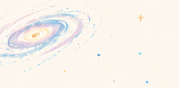
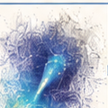
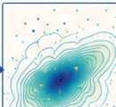

I am a PhD student at the Research School of Astronomy and Astrophysics, ANU.
My research focuses on understanding the dynamical structure of the Milky Way halo and its interaction with the Large Magellanic Cloud.
I combine simulations, observations, and statistical inference to ask how our Galaxy was assembled — and what its stars can tell us about dark matter.

I study near-field cosmology through the dynamics of the Milky Way stellar halo, the interaction between the Milky Way and the Large Magellanic Cloud, and the phase-space structure of stars. My work combines simulations, observations, and statistical inference to constrain the mass distribution and assembly history of our Galaxy.
interaction

& phase-space

constraints
-
2026
Add your talk title here
-
2024
Another talk or poster
© Yanjun Sheng · Built with GitHub Pages.